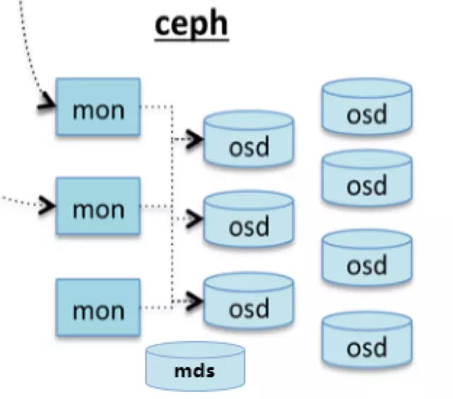
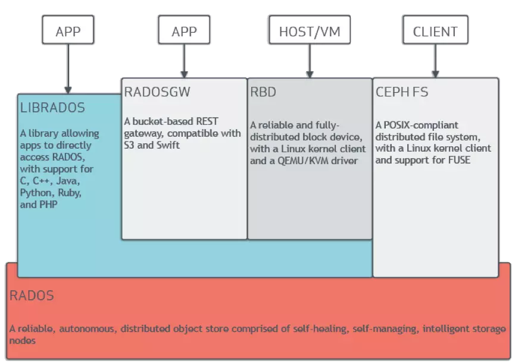
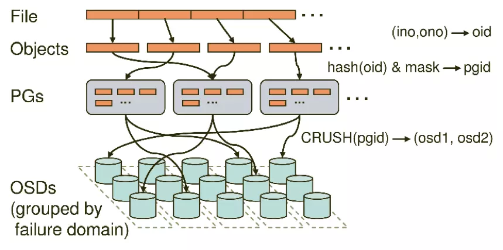

Ceph 简介
Ceph 是一个统一的分布式存储系统，设计初衷是提供较好的性能、可靠性和可扩展性。Ceph 项目最早起源于 Sage 就读博士期间的工作（最早的成果于2004年发表），并随后贡献给开源社区。在经过了数年的发展之后，目前已得到众多云计算厂商的支持并被广泛应用。
本文试图简单明了的介绍 ceph 的基本概念和组件，以对 ceph 有全面清晰的了解。
1. 核心组件
一个 ceph 集群通常有多个组件（进程），包括 monitor、osd、mds、radosgw 等，如下图所示： 
- MON： Monitor
- 监控整个集群的状态，维护集群的 Cluster MAP，保证集群数据的一致性。Cluster MAP 描述了对象块存储的物理位置（OSD的元数据）
- 一个 Ceph 集群需要多个 Monitor 通过 Paxos 协议组成的小集群
- 对应进程为 ceph-mon
- OSD： Object Storage Device
- 用于集群中所有数据与对象的存储，处理集群数据的复制、恢复、回填、再均衡。并向其他 OSD 守护进程发送心跳，向 Mon 提供监控信息
- 一个 Ceph 集群一般都有很多 OSD，一般一块磁盘对应一个 OSD
- 对应进程为 ceph-osd
- MDS： Ceph Metadata Server
- 为 Ceph 文件系统提供元数据计算、缓存与同步，在 ceph 中，元数据也是存储在 OSD 节点中的，MDS 类似于元数据的代理缓存服务器
- MDS 进程并不是必须的进程，只有需要使用 CephFS 时，才需要配置 MDS 节点
- 对应进程为 ceph-mds
- RGW： RADOS gateway
- RADOS 对象存储的一个 HTTP REST 网关，是 Ceph 分布式存储系统的一部分。它是用 libfcgi 实现的一个 FastCGI 模块，可联合任何支持 FastCGI 功能的网页服务器使用
- 对应进程为 radosgw
- MGR： Ceph Manager Daemon
- ceph luminous 版本中新增加的组件
- 该组件的主要作用是分担和扩展 monitor 的部分功能，减轻 monitor 的负担，让更好地管理 ceph 存储系统
- 对应进程为 ceph-mgr
2. 整体架构

Ceph 的底层是 RADOS，RADOS 本身也是分布式存储系统，Ceph 所有的存储功能都是基于 RADOS 实现。RADOS 采用 C++ 开发，所提供的原生 librados API 包括 C 和 C++两种。Ceph 的上层应用调用本机上的 librados API，再由后者通过 socket 与 RADOS 集群中其他节点通信并完成各种操作。
- RADOS：RADOS 全称 Reliable Autonomic Distributed Object Store，是对象存储集群的核心组件，Ceph 集群的精华，用户实现数据分配、Failover 等集群操作
- Libradio：Librados 是 Rados提供库，因为 RADOS 是协议很难直接访问，因此上层的 RBD、RGW 和 CephFS 都是通过 librados 访问的，目前提供 PHP、Ruby、Java、Python、C 和 C++ 支持
Ceph 目前提供三种存储方式接口：
- 对象存储（RGW，RADOS gateway）： Ceph 对象存储服务提供了 REST 风格的 API ，它有与 Amazon S3 和 OpenStack Swift 兼容的接口。也就是通常意义的键值存储，其接口就是简单的 GET、PUT、DEL 和其他扩展；
- 块存储（RBD，RADOS block device）： RBD 通过 Linux 内核客户端和 QEMU/KVM 驱动来提供一个分布式的块设备。RBD 是通过 librbd 库对应用提供块存储，主要面向云平台的虚拟机提供虚拟磁盘；目前 RBD 提供了两个接口，一种是直接在用户态实现， 通过 QEMU Driver 供 KVM 虚拟机使用；另一种是在操作系统内核态实现了一个内核模块，通过该模块可以把块设备映射给物理主机，由物理主机直接访问；
- 文件系统存储（Ceph File System）： Ceph FS 通过 Linux 内核客户端和 FUSE 来提供一个兼容 POSIX 的文档系统。Ceph 文档系统服务提供了兼容 POSIX 的文档系统，可以直接挂载为用户空间文档系统；
3. 存储过程

pool 是存储对象的逻辑分区，它规定了数据冗余的类型和对应的副本分布策略。创建 pool 的时，需要指定副本数 size、 PG 数量 pg-num、PGP 数量 pgp-num 和副本分布策略（副本 replicated 或 纠删码 erasure）。简单来说，PG 是指定存储池存储对象的目录有多少个，相同 PG 内的对象都会放到相同的硬盘上，PGP 是存储池 PG 的 OSD 分布组合个数。
当一个 file 存入 pool 时，有3个步骤：
- 把 file 切分为 RADOS 层的 object
- 每个 object 通过哈希算法映射到唯一的 PG
- 每个 PG 通过 CRUSH 算法映射到实际存储单元 OSD
下面是一段伪代码，简要描述了 ceph 的数据存储流程：
locator = object_name
obj_hash = hash(locator)
pg = obj_hash % num_pg
osds_for_pg = crush(pg) # returns a list of osds
primary = osds_for_pg[0]
replicas = osds_for_pg[1:]
object 是 ceph 最底层的存储单元，每个 object 包含元数据和原始数据，object 一般为 2MB 或 4MB。但 object 不会直接存储进 OSD 中，原因主要有2点：
- object 很小，在一个大规模的集群中可能有几百到几千万个 object，遍历 object 寻址速度缓慢
- 如果将 object 直接通过某种固定映射的哈希算法映射到 OSD 上，当这个 OSD 损坏时，对象无法自动迁移至其他 OSD 上面（映射函数不允许）
为了解决上述问题，ceph 引入了归置组的概念 PG，PG 是一个逻辑概念，它在数据寻址时类似于数据库中的索引：每个对象都会固定映射进一个 PG 中。PG 和 OSD 间是多对多的映射关系，在数据迁移时，也是以 PG 作为基本单位进行迁移，ceph 不会直接操作 object。
PGP 是 PG 存放 OSD 的一种排列组合，比如有 3 个osd，osd.1、osd.2 和 osd.3，副本数是2，如果 PGP 的数目为1，那么 PG 存放的 OSD 组合就只有一种，可能是[osd.1,osd.2]，所有的 PG 主从副本分别存放到 osd.1 和 osd.2，如果 PGP 设为 2， OSD 组合有两种，可能是 [osd.1,osd.2] 和 [osd.1,osd.3]，在一个 PGP 组合中，第一个 osd 是主，后面的为副本。一般讲将 PG 和 PGP 的数量设置为相等。
4. 其他
PG 寻址使用的 CRUSH 算法是 ceph 的两大创新之一。简单来说，ceph 摒弃了传统的集中式存储元数据寻址的方案，转而使用 CRUSH 算法完成数据的寻址操作。CRUSH 在一致性哈希基础上很好的考虑了容灾域的隔离，能够实现各类负载的副本放置规则，例如跨机房、机架感知等。CRUSH 算法有相当强大的扩展性，理论上支持数千个存储节点。